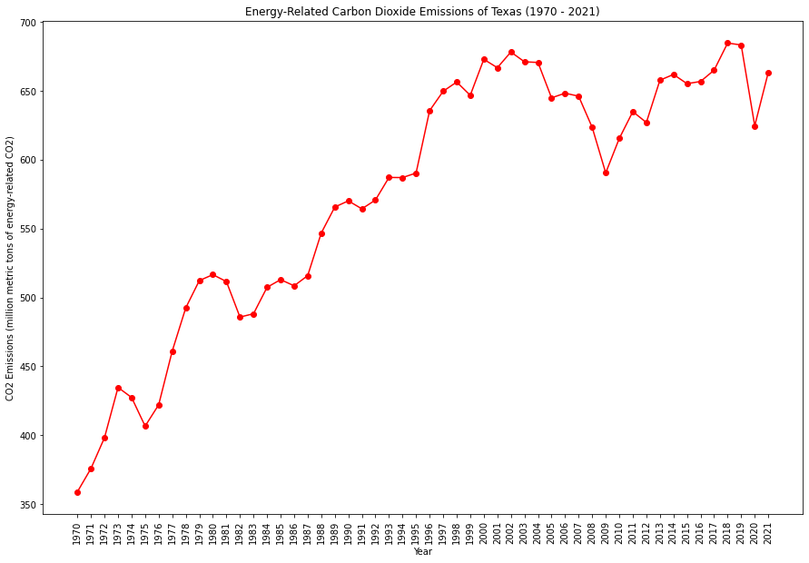
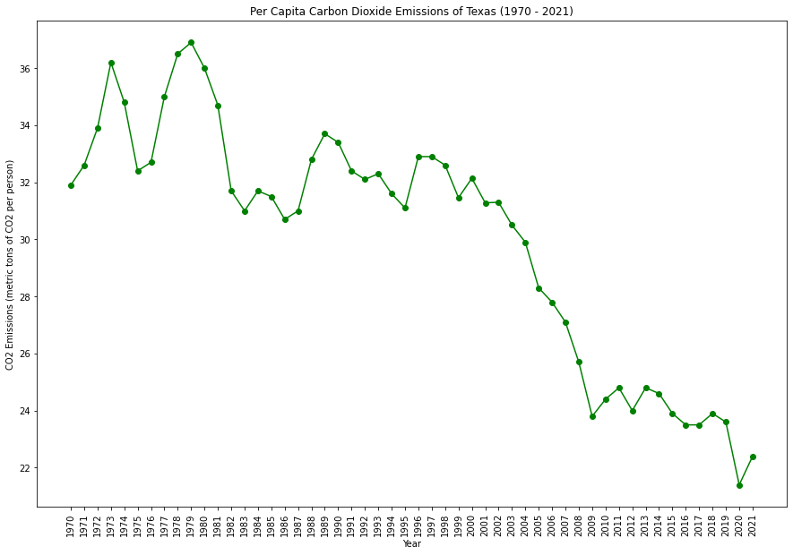
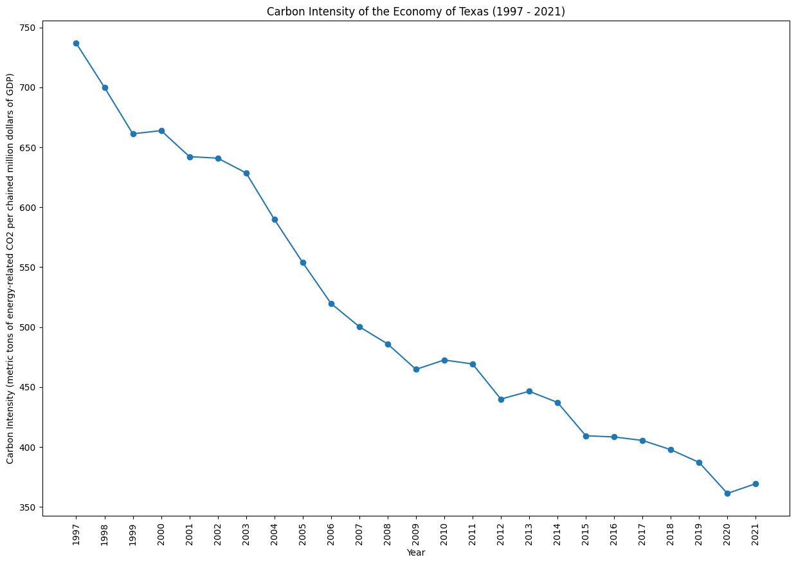

|  |  |
|  | |
Texas has a complex environmental profile due to its vast size and diverse industries. While the state is a leader in wind energy production, it is also a major contributor to national carbon emissions due to its significant oil and gas industry. Texas has seen a gradual increase in renewable energy adoption but faces challenges in balancing economic interests with environmental sustainability.